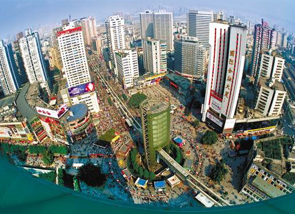

长江三峡
 万州大瀑布群景区，国家AAAA级景区，位于重庆甘宁镇，截至2020年10月6日，核心景点万州大瀑布宽151米，高64.5米，面积9739.5平方米，是亚洲瀑布面积最大的单挂瀑布，被誉为“亚洲第一瀑”。
万州大瀑布群景区，国家AAAA级景区，位于重庆甘宁镇，截至2020年10月6日，核心景点万州大瀑布宽151米，高64.5米，面积9739.5平方米，是亚洲瀑布面积最大的单挂瀑布，被誉为“亚洲第一瀑”。
万州大瀑布是自然形成的瀑布景观，对外开放的是瀑布核心区，已成为万州对外的一张旅游名片和三峡线上著名的景点之一，[2]景区内娱乐项目有网红秋千、奇妙喊泉、丛林飞车、水上竹筏等，主要景点有观音古洞、风栈道、陆安古桥等。
巴山渝水蕴涵了太多的惊喜和壮丽，“亚洲第一瀑”万州大瀑布具有六大旅游特色：天风栈道不可不上，古栈道犹如游龙般蜿蜒于悬崖峭壁之间；观音玉露不可不沐，晴天能赏瀑间彩虹，雨中同沐瀑布水雾与缠绵丝雨；瀑布仙子不可不仰，一起穿越巨瀑下的水帘洞；甘家秘功不可不赏，一台富于巴东文化特色的精彩表演；观音古洞不可不游，33座观音造像静坐于此；仙境古乐不可不闻，十多位民间艺人共奏天籁之音。
游客们再也无需远赴贵州黄果树瀑布，在重庆万州就能体验到大瀑布的壮观与震撼。
长寿湖
 抗战胜利纪功碑暨人民解放纪念碑，又名“抗战胜利纪功碑”、“人民解放纪念碑”，简称“解放碑”。位于重庆市渝中区解放碑商业步行街中心地带，是抗战胜利的精神象征，是中国唯一一座纪念中华民族抗日战争胜利的纪念碑。抗战胜利纪功碑暨人民解放纪念碑于1946年10月31日动工，1947年8月落成。1950年10月1日，时任西南军政委员会主席刘伯承为“人民解放纪念碑”题写碑名。该处是中国人民反法西斯战争取得胜利的象征，也是重庆解放及重庆市的象征。
抗战胜利纪功碑暨人民解放纪念碑，又名“抗战胜利纪功碑”、“人民解放纪念碑”，简称“解放碑”。位于重庆市渝中区解放碑商业步行街中心地带，是抗战胜利的精神象征，是中国唯一一座纪念中华民族抗日战争胜利的纪念碑。抗战胜利纪功碑暨人民解放纪念碑于1946年10月31日动工，1947年8月落成。1950年10月1日，时任西南军政委员会主席刘伯承为“人民解放纪念碑”题写碑名。该处是中国人民反法西斯战争取得胜利的象征，也是重庆解放及重庆市的象征。
2000年9月，被重庆市人民政府公布为直辖后第一批市级文物保护单位。2013年5月，被国务院列入“第七批全国重点文物保护单位”。2016年5月18日，解放碑入选“重庆十大文化符号”。2016年9月，入选“首批中国20世纪建筑遗产”名录。2020年11月18日，当选“成渝十大文旅新地标”。
三峡广场
长江三峡位于中国的腹地，是瞿塘峡，巫峡和西陵峡三段峡谷的总称。西起重庆市奉节县的白帝城，东迄湖北宜昌市的南津关，跨重庆奉节县、重庆巫山县、湖北巴东县、湖北秭归县、湖北宜昌市，长193公里。也就是常说的“大三峡”。
自西向东主要有三个大的峡谷地段：重庆瞿塘峡、重庆巫峡和湖北西陵峡，三峡因而得名。三峡两岸高山对峙，崖壁陡峭，山峰一般高出江面1000-1500米。最窄处不足百米。三峡是由于这一地区地壳不断上升，长江水强烈下切而形成的。
重庆市巫山县境内，有大宁河小三峡、马渡河小小三峡。长江沿线重庆境内，有“水下碑林”白鹤梁，“东方神曲之乡”丰都鬼城，建筑风格奇特的石宝寨、“巴蜀胜境”张飞庙、蜀汉皇帝刘备的托孤堂、龙骨坡巫山文化遗址等景观
四面山
自西向东主要有三个大的峡谷地段：重庆瞿塘峡、重庆巫峡和湖北西陵峡，三峡因而得名。三峡两岸高山对峙，崖壁陡峭，山峰一般高出江面1000-1500米。最窄处不足百米。三峡是由于这一地区地壳不断上升，长江水强烈下切而形成的。
重庆市巫山县境内，有大宁河小三峡、马渡河小小三峡。长江沿线重庆境内，有“水下碑林”白鹤梁，“东方神曲之乡”丰都鬼城，建筑风格奇特的石宝寨、“巴蜀胜境”张飞庙、蜀汉皇帝刘备的托孤堂、龙骨坡巫山文化遗址等景观
四面山，位于重庆市江津区，距重庆主城区130公里，截至2018年面积240平方公里，地处云贵高原大娄山北翼余脉，系地质学上的倒置山，拥有世界自然遗产“丹霞地貌”特征，极具世界级品质的景观观赏价值。是国家5A级景区，拥有中国风景名胜区摄影基地、中国网民最关注的十大景区等荣誉。
四面山，奇山，异水，红石，厚文四大景观资源特色明显，有128个景点。其中“望乡台瀑布”被称为华夏第一高瀑、中国最大心形景观、天下第一心，位于双凤村的“牛郎织女”“爱情天梯”被评为中国当代十大经典爱情故事。
四面山原始绿阔叶林带在同纬度中保存较好，有植物1500多种，珍稀濒危植物19种，是中国“物种基因的宝库”
四面山的景点有龙潭湖、洪海、水口寺、珍珠湖等。
万州大瀑布群
四面山，奇山，异水，红石，厚文四大景观资源特色明显，有128个景点。其中“望乡台瀑布”被称为华夏第一高瀑、中国最大心形景观、天下第一心，位于双凤村的“牛郎织女”“爱情天梯”被评为中国当代十大经典爱情故事。
四面山原始绿阔叶林带在同纬度中保存较好，有植物1500多种，珍稀濒危植物19种，是中国“物种基因的宝库”
四面山的景点有龙潭湖、洪海、水口寺、珍珠湖等。
万州大瀑布群景区，国家AAAA级景区，位于重庆甘宁镇，截至2020年10月6日，核心景点万州大瀑布宽151米，高64.5米，面积9739.5平方米，是亚洲瀑布面积最大的单挂瀑布，被誉为“亚洲第一瀑”。万州大瀑布是自然形成的瀑布景观，对外开放的是瀑布核心区，已成为万州对外的一张旅游名片和三峡线上著名的景点之一，[2]景区内娱乐项目有网红秋千、奇妙喊泉、丛林飞车、水上竹筏等，主要景点有观音古洞、风栈道、陆安古桥等。
巴山渝水蕴涵了太多的惊喜和壮丽，“亚洲第一瀑”万州大瀑布具有六大旅游特色：天风栈道不可不上，古栈道犹如游龙般蜿蜒于悬崖峭壁之间；观音玉露不可不沐，晴天能赏瀑间彩虹，雨中同沐瀑布水雾与缠绵丝雨；瀑布仙子不可不仰，一起穿越巨瀑下的水帘洞；甘家秘功不可不赏，一台富于巴东文化特色的精彩表演；观音古洞不可不游，33座观音造像静坐于此；仙境古乐不可不闻，十多位民间艺人共奏天籁之音。
游客们再也无需远赴贵州黄果树瀑布，在重庆万州就能体验到大瀑布的壮观与震撼。
长寿湖，位于重庆市，地处重庆1小时黄金旅游圈内，距重庆主城58公里，距长寿城区18公里，截至2022年12月30日，水域面积65平方公里，是“一五”时期苏联援华156个重点项目之一，是国家4A级景区。
1992年获批市级风景名胜区，湖内203座岛屿星罗棋布，常年栖息鸟类42种，盛产翘嘴红鲌（俗称翘壳）等珍稀鱼类10种，湖周及岛上遍植沙田柚、血脐、夏橙等特色水果，湖心区域有一处由19个岛屿围合形成的“天赐寿岛”，其形状似魏碑体“寿”字，又寓“久久长寿”之意。
洪崖洞
1992年获批市级风景名胜区，湖内203座岛屿星罗棋布，常年栖息鸟类42种，盛产翘嘴红鲌（俗称翘壳）等珍稀鱼类10种，湖周及岛上遍植沙田柚、血脐、夏橙等特色水果，湖心区域有一处由19个岛屿围合形成的“天赐寿岛”，其形状似魏碑体“寿”字，又寓“久久长寿”之意。
洪崖洞，原名洪崖门，是古重庆城门之一，国家4A级旅游景区，位于重庆市解放碑沧白路，地处长江、嘉陵江两江交汇的滨江地带，是兼具观光旅游、休闲度假等功能的旅游区。由重庆市人民政府总投资3.85亿元兴建而成，是重庆市重点景观工程，截至2022年建筑面积4.6万平方米。
2007年11月，重庆洪崖洞民俗风貌区被评定为国家AAAA级旅游景区。2020年11月18日，被列入“成渝十大文旅新地标”。2021年12月，被列入“重庆市第二批历史地名保护名录”。
洪崖洞是重庆市主要景点由吊脚楼、仿古商业街等景观组成。
园博园
2007年11月，重庆洪崖洞民俗风貌区被评定为国家AAAA级旅游景区。2020年11月18日，被列入“成渝十大文旅新地标”。2021年12月，被列入“重庆市第二批历史地名保护名录”。
洪崖洞是重庆市主要景点由吊脚楼、仿古商业街等景观组成。
重庆园博园，位于重庆市两江新区鸳鸯街道龙景湖区域，是一个集自然景观和人文景观为一体的超大型城市生态公园。公园四面临街，可远眺缙云山、鸡公山、观音峡等山景、水景、峡景和北碚城市景观，于2011年开园。
重庆园博园截止2016年11月18日，其占地面积3300亩，其中湖面800亩，拥有4大功能区、5大特色建筑（重云塔、龙景书院、圆缘园、主展馆、巴渝园）、127个城市展园、660余种共1200余万株植物。
重庆园博园先后荣获第八届中国（重庆）国际园林博览会筹办工作“先进集体”，中华全国总工会“工人先锋号”，国家4A级景区等荣誉。2018年重庆园博园成功创建“国家环保科普基地”。
磁器口古镇
重庆园博园截止2016年11月18日，其占地面积3300亩，其中湖面800亩，拥有4大功能区、5大特色建筑（重云塔、龙景书院、圆缘园、主展馆、巴渝园）、127个城市展园、660余种共1200余万株植物。
重庆园博园先后荣获第八届中国（重庆）国际园林博览会筹办工作“先进集体”，中华全国总工会“工人先锋号”，国家4A级景区等荣誉。2018年重庆园博园成功创建“国家环保科普基地”。
重庆磁器口古镇，古称白崖场，位于重庆市沙坪坝区，是国家AAAA级景区 、中国历史文化名街、重庆市重点保护传统街、重庆“新巴渝十二景”
古镇的街巷都是明清风格的建筑，脚下都是青石板路。景点有钟家院、通家院、民俗文化村、茶馆、宝轮寺，还可以品尝当地美食。建文四年，建文帝朱允炆逃难至此时，因藏身于一口枯井而逃过一劫，那口枯井也因建文帝的到来焕发生机，带领着全村的枯井涌出清泉，于是那口枯井有了名字“生水井”，又因它结缘建文帝而生水，又叫“僧水井”。
磁器口古镇总面积32.5万平方米，其中保存完好的古镇核心区14.3万平方米，分布于马鞍山东侧和东南侧。古镇依山而建，由山起城。以磁器口正街和横街为骨架，42条巷道垂直于正街和横街向马鞍山脊和溪沟边缘呈枝状发展，形成特征明显的树枝状平面格局。正街和横街宽3—6.5米，将嘉陵江水运码头、宝轮寺及外围交通干道联为一体。巷道宽1.5—4.5米，顺应地形灵活布局，不拘一格，街道—巷道—宅院构成公共空间、半公共空间、私有空间的3级空间结构，形成清晰的街区社会组织的基本模式。
重庆科技馆
古镇的街巷都是明清风格的建筑，脚下都是青石板路。景点有钟家院、通家院、民俗文化村、茶馆、宝轮寺，还可以品尝当地美食。建文四年，建文帝朱允炆逃难至此时，因藏身于一口枯井而逃过一劫，那口枯井也因建文帝的到来焕发生机，带领着全村的枯井涌出清泉，于是那口枯井有了名字“生水井”，又因它结缘建文帝而生水，又叫“僧水井”。
磁器口古镇总面积32.5万平方米，其中保存完好的古镇核心区14.3万平方米，分布于马鞍山东侧和东南侧。古镇依山而建，由山起城。以磁器口正街和横街为骨架，42条巷道垂直于正街和横街向马鞍山脊和溪沟边缘呈枝状发展，形成特征明显的树枝状平面格局。正街和横街宽3—6.5米，将嘉陵江水运码头、宝轮寺及外围交通干道联为一体。巷道宽1.5—4.5米，顺应地形灵活布局，不拘一格，街道—巷道—宅院构成公共空间、半公共空间、私有空间的3级空间结构，形成清晰的街区社会组织的基本模式。
重庆科技馆，是位于重庆市江北嘴中央商务区（CBD）核心区域的一座场馆建筑，于2006年1月7日奠基，2009年9月9日建成开馆，总投资额5.67亿元，是重庆市委、市政府确定的全市十大社会文化事业基础设施重点工程之一，是重庆市科协直属事业单位。
重庆科技馆占地面积37亩，建筑面积4.83万平方米，外观采用石材与玻璃两种材质，以“生活·社会·创新”为展示主题，馆内共设6个主题展厅和2个专题展厅，常设展品展项数目达到412件（套），展品涵盖材料、机械、交通、军工等学科领域。
重庆大剧院
重庆科技馆占地面积37亩，建筑面积4.83万平方米，外观采用石材与玻璃两种材质，以“生活·社会·创新”为展示主题，馆内共设6个主题展厅和2个专题展厅，常设展品展项数目达到412件（套），展品涵盖材料、机械、交通、军工等学科领域。
重庆大剧院位于重庆市江北区，是集歌剧、戏剧、音乐会演出，文化艺术交流，多功能为一体的大型社会文化设施。项目将形成重庆城市社会文明新的象征和标志性建筑，对于塑造城市形象、提高城市文化品位与城市功能、增强城市吸引力和辐射力、丰富群众文化生活具有十分重要的作用和意义。
该剧院交通便利，地理位置优越，位于江北嘴CBD，毗邻重庆科技馆，附近有地铁6号线及连接解放碑中央商务区和洪崖洞风景区的千厮门大桥。
2019年1月，被中国建筑业协会公布为“改革开放40年百项经典工程”。
观音桥
该剧院交通便利，地理位置优越，位于江北嘴CBD，毗邻重庆科技馆，附近有地铁6号线及连接解放碑中央商务区和洪崖洞风景区的千厮门大桥。
2019年1月，被中国建筑业协会公布为“改革开放40年百项经典工程”。
江北区观音桥位于重庆渝中半岛和北部地区的几何中心，是传统的商贸繁华区域，是重庆市人民政府确定的五大商圈之一，是江北区政治、经济、文化中心和交通枢纽。
观音桥商圈是重庆主城商业副中心中集聚能力、扩散能力、辐射能力最强的一个大商圈。商圈内吃有北城天街美食一条街；住有金源、君豪2个超五星级的大饭店；购有国内著名的六大主力百货和最大的百联金源时代购物广场；游有主城最大的开放式城市生态公园；乐有高科技含量的方特科幻乐园和中国西部最大的金源地下娱乐城。观音桥商圈集休闲、娱乐、购物、美食、健身于一体，已逐步成为重庆主城区最具活力的商贸中心。
解放碑
观音桥商圈是重庆主城商业副中心中集聚能力、扩散能力、辐射能力最强的一个大商圈。商圈内吃有北城天街美食一条街；住有金源、君豪2个超五星级的大饭店；购有国内著名的六大主力百货和最大的百联金源时代购物广场；游有主城最大的开放式城市生态公园；乐有高科技含量的方特科幻乐园和中国西部最大的金源地下娱乐城。观音桥商圈集休闲、娱乐、购物、美食、健身于一体，已逐步成为重庆主城区最具活力的商贸中心。
抗战胜利纪功碑暨人民解放纪念碑，又名“抗战胜利纪功碑”、“人民解放纪念碑”，简称“解放碑”。位于重庆市渝中区解放碑商业步行街中心地带，是抗战胜利的精神象征，是中国唯一一座纪念中华民族抗日战争胜利的纪念碑。抗战胜利纪功碑暨人民解放纪念碑于1946年10月31日动工，1947年8月落成。1950年10月1日，时任西南军政委员会主席刘伯承为“人民解放纪念碑”题写碑名。该处是中国人民反法西斯战争取得胜利的象征，也是重庆解放及重庆市的象征。2000年9月，被重庆市人民政府公布为直辖后第一批市级文物保护单位。2013年5月，被国务院列入“第七批全国重点文物保护单位”。2016年5月18日，解放碑入选“重庆十大文化符号”。2016年9月，入选“首批中国20世纪建筑遗产”名录。2020年11月18日，当选“成渝十大文旅新地标”。
位于歌乐山下的三峡广场，是沙坪坝区委、区政府抓住机遇、审时度势、顺应民心、发挥优势、作出正确决策后，由沙坪坝区建委具体实施建设的集商贸、文化、景观、休闲于一体的大型城市广场。
三峡广场既是目前中国西部建成的较大的广场之一，位于沙坪坝闹市中心，呈十字形。也是重庆市城市广场中的精品工程。
三峡广场始建于1997年，分为绿色艺术园、商业文化街、名人雕塑园、三峡景观园四个部分，总用地面积8万平方米，工程建设总投资6000万元，其丰富的自然景观、人文景观和历史文化内涵彰显出作为重庆市广场精品工程的独特魅力。
大自然的神奇造化，铸就了雄奇的长江三峡。共和国的伟大力量，造就了举世瞩目的三峡工程。为了让更多的人了解三峡工程，为民群众创造一个良好的生态环境，在这里修建了三峡广场。三峡广场的兴建，倾注了重庆人对三峡的无比热爱，对三峡工程的深厚情感。
镌刻在碑上的“三峡广场”四个金色大字，是李鹏委员长亲笔题写的
杨家坪
三峡广场既是目前中国西部建成的较大的广场之一，位于沙坪坝闹市中心，呈十字形。也是重庆市城市广场中的精品工程。
三峡广场始建于1997年，分为绿色艺术园、商业文化街、名人雕塑园、三峡景观园四个部分，总用地面积8万平方米，工程建设总投资6000万元，其丰富的自然景观、人文景观和历史文化内涵彰显出作为重庆市广场精品工程的独特魅力。
大自然的神奇造化，铸就了雄奇的长江三峡。共和国的伟大力量，造就了举世瞩目的三峡工程。为了让更多的人了解三峡工程，为民群众创造一个良好的生态环境，在这里修建了三峡广场。三峡广场的兴建，倾注了重庆人对三峡的无比热爱，对三峡工程的深厚情感。
镌刻在碑上的“三峡广场”四个金色大字，是李鹏委员长亲笔题写的

两年前，九龙坡区政府启动24平方公里城区规划设计工作，向德国、英国、法国等五家国际一流设计机构发布了征集标书，重点针对杨家坪商圈扩容升级等问题构思总体城市形象设计。
目前，杨家坪商圈占地面积仅为0.2平方公里，根据规划设计方案，杨家坪新商圈占地面积将达到2.5平方公里，两相比较，扩容量达12倍强。 将新添近200万平方米商业商务体，目前已进入设计深化阶段。 杨家坪商圈将沿着长江二路这条线，往现在的华润二十四城方向北拓，商圈北拓工程将分成二期来完成。一期工程位于现在的实验二小及原建设厂的部分区域，为全商业、商务形态。这里将修建起3栋高约300米的高层，高层之间的开敞空间则会形成一个下沉广场，作为一大片休闲空间，带来约60万平方米的商业商务体。除了地下通道外，从杨家坪商圈西城天街到商圈扩容一期工程的下沉广场之间，将架起一道漂亮的空中连廊，把两大块商业体连成一片。
重庆欢乐谷
目前，杨家坪商圈占地面积仅为0.2平方公里，根据规划设计方案，杨家坪新商圈占地面积将达到2.5平方公里，两相比较，扩容量达12倍强。 将新添近200万平方米商业商务体，目前已进入设计深化阶段。 杨家坪商圈将沿着长江二路这条线，往现在的华润二十四城方向北拓，商圈北拓工程将分成二期来完成。一期工程位于现在的实验二小及原建设厂的部分区域，为全商业、商务形态。这里将修建起3栋高约300米的高层，高层之间的开敞空间则会形成一个下沉广场，作为一大片休闲空间，带来约60万平方米的商业商务体。除了地下通道外，从杨家坪商圈西城天街到商圈扩容一期工程的下沉广场之间，将架起一道漂亮的空中连廊，把两大块商业体连成一片。
重庆欢乐谷，是全国首座山地版欢乐谷，位于两江新区礼嘉国际商务旅游城，于2017年7月8日正式开园，属华侨城集团。
园区分为欢乐时光、超级飞侠训练营、滨海湾、恐龙森林、老重庆、河谷矿山小镇六大主题区，拥有全球最先进飞翼过山车、全球第六大摩天轮、西南最长最大木质过山车等百余项国际一流游乐项目。
重庆欢乐谷不仅有与其他欢乐谷一样引领世界潮流的娱乐项目和贯穿四季的主题活动，同时整个景区将按照国家5A级景区的标准来打造，更多的融入 巴渝文化 的特色，让重庆欢乐谷成为展示数千年巴渝文化的大舞台。
重庆加勒比海水世界
园区分为欢乐时光、超级飞侠训练营、滨海湾、恐龙森林、老重庆、河谷矿山小镇六大主题区，拥有全球最先进飞翼过山车、全球第六大摩天轮、西南最长最大木质过山车等百余项国际一流游乐项目。
重庆欢乐谷不仅有与其他欢乐谷一样引领世界潮流的娱乐项目和贯穿四季的主题活动，同时整个景区将按照国家5A级景区的标准来打造，更多的融入 巴渝文化 的特色，让重庆欢乐谷成为展示数千年巴渝文化的大舞台。
重庆加勒比海水世界，别称重庆海昌加勒比海水世界，位于重庆市南岸区，2009年开园，是西南地区拥有国家4A级旅游景区称号的水主题公园。
重庆加勒比海水世界融合了加勒比海文化，具有玛雅旧城风貌，玛雅图腾、雕刻彩陶、城墙壁画遍及整个园区，是海昌海洋公园打造的西部地区集游乐、购趣、美食、异域景观于一体的大型水主题公园。景区特色有丰富的主题活动、灯光秀造型等。
重庆汉海海洋公园
重庆加勒比海水世界融合了加勒比海文化，具有玛雅旧城风貌，玛雅图腾、雕刻彩陶、城墙壁画遍及整个园区，是海昌海洋公园打造的西部地区集游乐、购趣、美食、异域景观于一体的大型水主题公园。景区特色有丰富的主题活动、灯光秀造型等。
重庆（尧泰汉海）海洋公园隶属于新加坡尧泰汉海文旅集团，项目坐落于重庆市巴南区龙洲湾，紧临轨道交通3号线学堂湾站。项目总投资8亿元，占地310亩，划分为海洋公园和鲸豚湾水世界两大主题公园，是集吃、住、行、游、购、娱为一体的高品质大型海洋主题乐园。
尚在规划中的海洋公园二期包含极地动物馆、鲸豚表演馆两大场馆，预计2018年建成。项目整体落成后，重庆（尧泰汉海）海洋公园将以动物展示、亲子体验、海洋科普、互动演艺为主题，涵盖旅游、休闲、亲子度假等多种娱乐方式。
鲸豚湾水世界引进国外16余项水上游乐设施，并在国内首次推出“海豚伴游”、“珊瑚礁浮潜体验”、“海底漂流河”等游玩项目。多种多样的主题活动和热辣激情的演艺表演，将给游客呈现浪漫、刺激、惊险、畅爽的全新游玩体验。
尚在规划中的海洋公园二期包含极地动物馆、鲸豚表演馆两大场馆，预计2018年建成。项目整体落成后，重庆（尧泰汉海）海洋公园将以动物展示、亲子体验、海洋科普、互动演艺为主题，涵盖旅游、休闲、亲子度假等多种娱乐方式。
鲸豚湾水世界引进国外16余项水上游乐设施，并在国内首次推出“海豚伴游”、“珊瑚礁浮潜体验”、“海底漂流河”等游玩项目。多种多样的主题活动和热辣激情的演艺表演，将给游客呈现浪漫、刺激、惊险、畅爽的全新游玩体验。
自然风景


人文景观
重庆历史
重庆是中国著名历史文化名城，有文字记载的历史达3000多年，是巴渝文化的发祥地。因嘉陵江古称“渝水”，故重庆又简称“渝”。北宋崇宁元年(1102年)，改渝州为恭州。南宋淳熙16年(1189年)正月，孝宗之子赵惇先封恭王，二月即帝位为光宗皇帝，称为“双重喜庆”，遂升恭州为重庆府，重庆由此而得名。1891年，重庆成为中国最早对外开埠的内陆通商口岸。
1929年，重庆正式建市。抗日战争时期，国民政府定重庆为陪都，重庆同华盛顿、伦敦、莫斯科一道被列为世界反法西斯四大指挥中心，为世界反法西斯战争作出了巨大贡献。抗日战争时期和解放战争初期，以周恩来同志为代表的中共中央南方局在重庆负责领导国统区、港澳及海外地区的党组织和统一战线工作，形成的“红岩精神”，是激励重庆人民的巨大精神动力，是我们国家和民族的宝贵精神财富。民盟、民建、九三学社和民革前身之一的“三民主义同志联合会”均在重庆成立。
新中国建立初期，重庆为中央直辖市，是中共中央西南局、西南军政委员会驻地和西南地区政治、经济、文化中心。1954年，西南大区撤销后改为四川省辖市。1983年，党中央、国务院批准成为全国第一个经济体制综合改革试点城市，实行计划单列。1997年3月14日，八届全国人大五次会议批准设立重庆直辖市，6月18日正式挂牌。
重庆民俗
重庆人千百年来形成的春节拜年、十五观灯、清明祭祖、中秋赏月以及悬酒幌、赶庙会、坐花轿、放风筝等民俗，与中国其他地区相比大同小异。但由于重庆有五个土家族、苗族自治县，这两个既热情又传统的民族都有自己独特的民俗节日。
心灵手巧的土家族人，在舞蹈上拥有非凡的天赋。每年正月初三至十五，土家族人都要举行盛大的祭祀、祈祷、喜庆活动。男女老少穿起节日的盛装，跳起欢快而热烈的摆手舞。一时间，满耳喧天鼓乐，满眼婆娑舞影。骁勇善战的苗族人，则对唱歌情有独钟。一年一度的“赶秋”，是苗族人大展歌喉的传统节日。青年男女还可以在“赶秋”节上，借歌声互表衷情。
重庆文化
巴渝文化，博大精深，源远流长。早在殷周时期，生活在长江上游巴山渝水的先民便以勇猛强悍和歌舞著称，就是在参战时，也“歌舞以凌殷人”。近年来的三峡库区考古发现，更雄辩地证明：长江流域与黄河流域一样，同是中华民族文明的摇篮，巴渝文化历史悠久、绚丽多彩，是中华灿烂文化的重要组成部分。
这里暂且不说闻名中外的三峡一带的古迹胜地，也不说抗战时期陪都文人工荟萃将巴渝文化推到一个高峰，仅以解放后尤其近几年的文化为例，足以证明这一点。大足石刻在巴渝文化上耸起一座丰碑，从它每一刀、每一凿的痕迹里，我们似乎可以窥视到巴渝文化在千百年来发展的脉络？ 那铜梁龙舞，那黔江摆手舞，那小河锣鼓，那川江号子，那巴渝吹打（接龙吹打、金桥吹打），那秀山花灯，那九龙楹联，那广场故事，那梁平三绝（梁山灯戏、梁平竹帘、梁平年画），又似乎在大足石刻里找到其踪影？
- 重庆小面就是素面！别加啥牛肉。
- 重庆人不会觉得有哪家火锅最正宗，随便走进一家看起来人多的老火锅店就可以，不好吃的火锅店在重庆开不下去。
- 南山枇杷园火锅还是值得去的，倒不是味道有多好，而是夜景美。
- 重庆火锅是越煮越辣，不能吃辣的同学动作要快
- 不能吃辣的同学试试山城小汤圆，甜甜软软糯糯。
- 很多人买伴手礼都会选磁器口麻花，真不必去磁器口排队，超市里买的一样好吃，而且麻花背回去很重，购买请慎重。
- 伴手礼另一种热门选择是火锅底料，其实小面佐料也不错。
- 不建议穿浅色衣服，吃火锅、酸辣粉容易溅身上…
- 讲究点的还可以带瓶衣服喷雾除味。
- 重庆主城的精华是江景、夜景，但整个重庆的精华在周边区县。乌江画廊、北碚温泉、巫溪红池坝……
- 许多本地人都不知道，重庆有个南天湖，雪景堪比瑞士。
- 比起解放碑，观音桥步行街更适合购物，本地人去得也更多。
- 除了去朝天门码头吹风（看人挤人），还可以去江对岸的重庆大剧院 走走，那里有片台阶是本地人晚饭后会去的，随意找级台阶坐下吹吹江风很巴适。
- 南山一棵树比较远，难打车，看夜景可以去鹅岭公园瞰胜楼。
- 去四川美术学院不要只看涂鸦，雕塑系很值得去，二楼有很多常设展品，棒！
- 重庆很多大学都很美，比如重庆工商大学里面可以爬山，重庆大学虎溪校区还有天鹅。
- 即使对历史没兴趣，中山四路依然值得拥有，绿荫大道美美的，两边都是巴渝建筑很有风情。
- 东水门大桥附近的滨江路下面岸边的草地是隐秘拍照点。
- 渣滓洞隧道也是隐藏拍照圣地，女生可以穿亮色裙子去拍照。
- 重庆旧货市场很有意思，在那里能找到重庆的江湖码头气质。
- 轻轨二号线是重庆最早开通的一条线，最旧也最迷人，任一站下车，都有惊喜。
- 体验轻轨要站在第一节车厢，透过驾驶室的玻璃盯着轨道望去，时而过江，时而穿越楼房。
- 来重庆玩，能坐轻轨绝不坐公交。
- 两江夜游不划算，可以坐轮渡，5块钱一张票从朝天门码头坐到对面南滨路。
- 不要在地铁上/天桥上导航，不然出去之后发现地上和地下是不一样的地点。
- 解放碑民宿真的超多，而且卧虎藏龙，如果是第一次来重庆，首推住解放碑附近。
实验报告
实验内容：建立了5个界面，分别是入站的首页，各个景点的详细介绍，风景图片的展示，历史介绍，和旅游的一些小建议
1.页面跳转
首先最基本的页面切换逻辑是通过超链接转界面完成的，先做好测边栏，用fixed固定，测边栏的每一个按钮对应一个超链接
<div> class="menu"
<a href="#content1" class="link">首页</a>
<a href="#content2" class="link">景点介绍 </a>
<a href="#content3" class="link">风景预览 </a>
<a href="#content4" class="link">历史文化 </a>
<a href="#content5" class="link">旅游建议 </a>
<a href="#content6" class="link">查看报告 </a>
</div>
然后剩下的空间fixed一个div(view)来当展示框，在css中设置
.view{
position: fixed;
top: 0;
left: 10%;
width: 90%;
height: 100%;
overflow: hidden;
border: 1px solid #333;
}
这样便可以将溢出的空间隐藏，只显示选择的界面, 将做的页面按照content1,content2,content3...的顺序排序设置描点即可跳转
2.首页
首页中最值得讲的有两点：
（1）：背景的模糊
正常情况下如果直接使用 filtbeforeer: blur(3px);来进行模糊的话，会使整个页面包括内容一起模糊，这和我们的预期是不相符的，
因此我们不能直接使用，而使用伪元素before是一个不错的选择，::before 创建一个伪元素，其将成为匹配选中的元素的第一个子元素
，然后我们在上面添加模糊背景
.allcomment{
line-height: 50px;
left:0;
right: 0;
top: 0;
bottom: 0;
width:100%;
height:100%;
line-height: 50px;
}
.allcomment:before
{
background-image: url(./png/cqfj.png) ;
background-size: cover;
width:100%;
height:100%;
content: "";
position: absolute;
top: 0;
left: 0;
z-index: -1;/*-1 可以当背景*/
-webkit-filter: blur(3px);
filter: blur(3px);
}
注：allcomment为content1中的一个占全部的div
(2)音乐播放：
这个东西确实意义不明，但是我既然会了就顺便写上去了
音乐是通过audio写入的,声明controls属性让用户可以自行控制，autoplay属性让其自动播放，以下是具体代码
<audio autoplay controls="controls"loop="loop" preload="auto"
src="./MP3/重庆孩子 - 重庆时间.mp3" id="bgm">
</audio>
此外，首页的图片及其下方文字进行了与对应景点介绍的超链接，点击即可跳转。
3.景点介绍
（1）导航
页面最上方是快速跳转的导航，使用的是gird排版，景点名字是对应介绍的超链接。值得一提的是，我最开始的设想是讲导航一直固定
在屏幕上方，但是如果用fixed固定的话跳转到其他页面后它依然会存在。而如果只在介绍界面加滑条，那么在跳到对应介绍时页面不会
包含导航而是在页面下方显示下一页面的上部分，尝试多次也没有成功解决，只得放弃。
对应css如下：
#quicknavigation
{
position:relative;
width: 100%;
height: 200px;
display: flex;
align-items: center;
display: grid;
/* grid-template-areas: "h2 h2" */
grid-template-columns: 50% 50%;
border: 1px solid #333;
font-size: 14px;
}
（2）介绍页面
没什么特别可说的，就是用flex将各个包含介绍的div一个个往下排，不过我在最后一个介绍后仍然留了一部分空间，这是因为要给超链接
跳转预留位置，否则跳转时会显示下一页面的内容直接露馅，然后顺便做了个返回按钮回到顶端。
4.风景预览
这个界面主要是gird的使用和背景渐变的使用然后插入各个图片，然后就没有什么特别有技术含量的了
css代码如下：
#content3{
display: flex;
flex-direction: column;
overflow-y: scroll;
background: linear-gradient(rgb(212, 232, 131), rgb(24, 215, 155));
}
.imgbox{
display: grid;
grid-template-columns: 20% 20% 20% 20% 20%;
grid-template-rows: 1fr 1fr;
row-gap: 30px;
border:1px solid #000;
background: linear-gradient(blue, pink);
}
5.历史文化
该界面值得一提的便是背景的透明了，最开始，我将文字直接放在背景图片上，发现有的文字与背景颜色相近，背景模糊的方法用过了，所
以打算换个方式解决所以这个页面是在文字部分再加一个背景，然后将其透明，这样的话文字就和背景有了较高的辨识度了。
以下是对应css代码：
#wenhua{
display: flex;
justify-content: space-around;
background-color: rgb(245, 245, 220,0.4)
}
#history{
/* background: linear-gradient(rgb(170, 211, 242),rgb(255, 255, 255) ); */
border:1px solid #000;
background-color: rgb(245, 245, 220,0.4)
}
#minsuandminzu
{
display: flex;
justify-content: space-between;
background-color: rgb(245, 245, 220,0.4)
}
6.旅游建议
这个界面是一张背景图和一个超长的列表组成的，与通常不同的是这个界面是我先射箭在画靶完成的，先把图放上去，再在上面放文字，再
限制长宽与背景吻合，后来我想了想，做个外边框就行了，不过已经完成了，所以就没有更改。
以下是对应的css代码：
#txtbox3{
width: 70%;
height: 100%;
position: absolute;
background:url(./png/txtbox6.png);
background-repeat: no-repeat;
background-size: 100% 100%;
}
.decimal
{
overflow-y: scroll;
width: 75%;
height: 80%;
position: absolute;
top: 10%;
left: 10%;
}
7.反思
除了我再介绍页面时讲的问题以外，这个网站的不足还有以下几点
1.没有使用动画效果，页面转换比较生硬。
2.没有使用js，互动性较差，放大缩小网页时会出现一些问题。
3.没有提前规划，界面设计不合理，网页不是很好看。
——学号：632107060223
姓名：吴呈祥
指导老师：王勇
重庆旅游指南
重庆简绍
重庆依山临水，地处长江与嘉陵江交汇处，别称山城、江城、雾都、火炉。重庆因江而兴，因水而盛，是中国中西部唯一的直辖市。重庆旅游资源丰厚，自然文人旅游景点独具特色。2012年，重庆市入选世界十大旅游目的地。具有三千年悠久历史的重庆旅游资源丰富[1]，即有集山、水、林、泉、瀑、峡、洞等为一体的壮丽自然景色，又有熔巴渝文化、民族文化、移民文化、三峡文化、陪都文化、都市文化于一炉的浓郁文化景观。全市共有自然、人文景点300余处，其中有世界文化遗产1个，全国重点文物保护单位13个，国家重点风景名胜区6个。重庆还是川菜主要代表地域之一，发源自重庆的火锅更是闻名遐耳。雄伟壮阔的长江三峡、璀璨多彩的重庆夜景、秀丽怡人的芙蓉江、火爆刺激的重庆火锅都是重庆重要的旅游资源。推荐景点